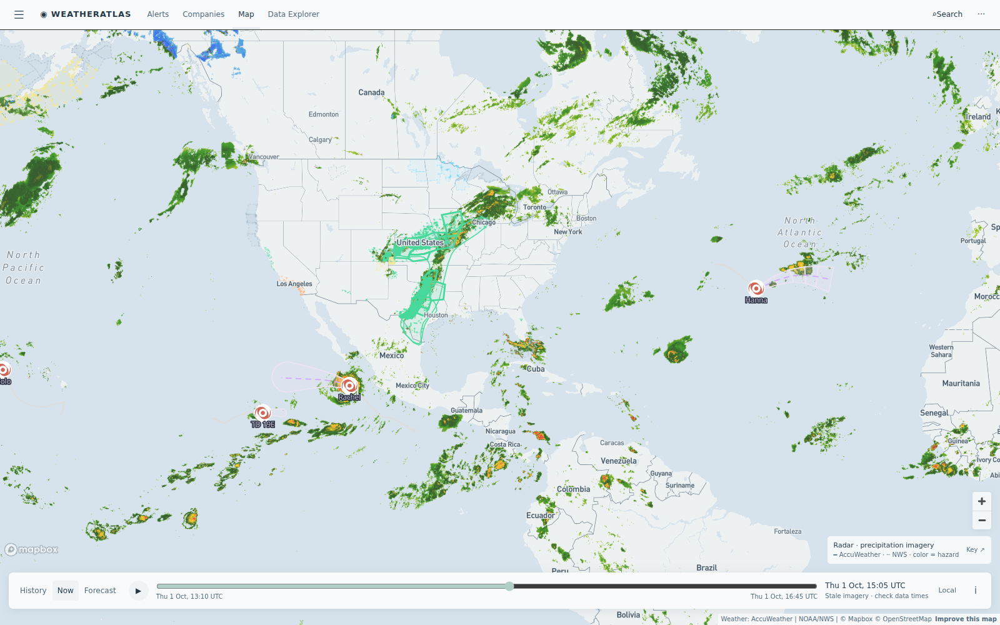

Daily severe-weather intelligence for LNG, refining, offshore, and terminal operators.

Live radar + alerts, 1 Oct ~14:30 UTC. The flash-flood corridor has shifted onto North Texas (Barnett Shale) and southern Oklahoma with active warnings and heavy lightning; Missouri Valley flood warnings cover Nebraska; Hurricane Rachel and Nolo remain offshore in the East Pacific; TD Hanna over open Atlantic. Interactive radar + hurricane tracker: accuweather.taborlin.co.
| System | Status | Energy-asset impact |
|---|---|---|
| North Texas / Oklahoma flash-flood corridor (Barnett Shale, Arkoma, Sooner trend) | ACTIVE | AccuWeather "Dangerous Weather Imminent" flash-flood flags live on Barnett gas operations ahead of / alongside NWS Flash Flood Warnings (Tarrant, Dallas, Denton, Johnson); 10-45 lightning strikes per asset nearby — repeated crew standdowns and muddy-lease logistics |
| Missouri Valley flood warnings (NE/IA) | ACTIVE | Flood Warnings + broad Flood Watch across Nebraska — fertilizer and ammonia plants (Geneva Nitro, Beatrice corridor) face rail delays and containment checks |
| East Pacific: Hurricane Rachel (Cat 1) · Nolo (Cat 2) · TD Hanna (Atlantic) | OPEN WATER | All offshore — no US energy-coast threat; elevated seas on Baja and Mexico West-Coast shipping lanes; West Coast refinery ops unaffected (El Segundo under a clean post-heat window today) |
A three-window thunderstorm day over the Barnett Shale is where alert lead time pays: the flag that arrives before the warning lets a field crew plan standdowns around real lightning-free work windows. The per-asset briefs below embed the same-hour AccuWeather enterprise vs free-API comparison, refreshed daily:
Three thunderstorm windows today under an active Flash Flood Warning — AccuWeather carries 78-85% storm probability the free feed flattens.
View live brief →Clean post-heat window today — the story is marine-layer timing that decides dock and loading visibility windows tonight.
View live brief →Southern-Oklahoma flood flags brush the Cushing corridor — tank-farm drainage and pipeline ROW checks continue.
View live brief →